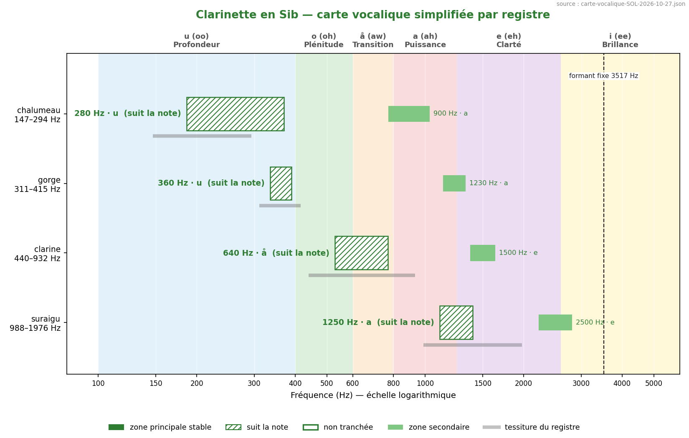
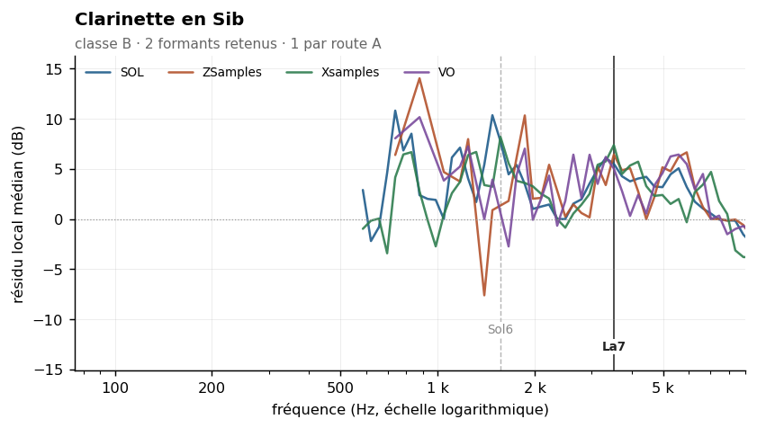
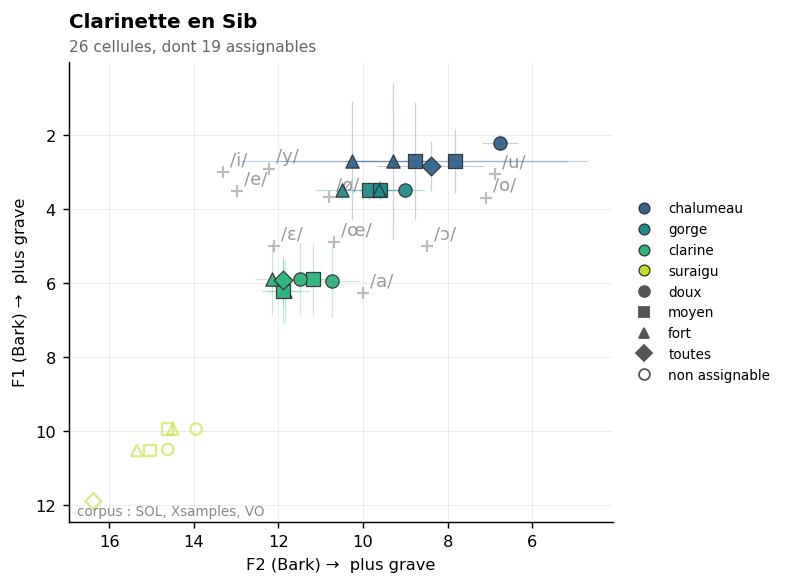

Bb clarinet
Sommaire › Les bois
| Classe | Provenance | Échantillons | Tessiture | Formants établis |
|---|---|---|---|---|
| B | IRCAM | 126 | D3–G6 | 1 |
| Formant | Note | Corpus | Localisation |
|---|---|---|---|
| 3517 Hz | La7 | SOL ZSamples Xsamples |



Statut des formants — révision du 26/10/2026
Confrontation des cinq corpus. Provenance de ce corpus : IRCAM (FullSOL2020).
Formant Statut 1567 Hz présent dans le seul corpus SOL 3517 Hz route A — SOL + ZSamples au même point de grille, 3517 Hz · zone vue par SOL, Xsamples, ZSamples
etendue_residudans l'en-tête n'est pas une largeur de bande : c'est l'étendue du résidu de la méthode 8, souvent une butée de plage. Les largeurs mesurées sont dans_LARGEURS-DE-BANDE.md.
Méthode 8 — deux formants retenus. Réconcilie deux sources que l'ancienne étude croyait contradictoires. Voir
00-METHODE.md.
La clarinette en Sib est de classe B — ρ = 0,77, son spectre suit largement la hauteur, et l'ancienne étude avait raison sur ce point : « pas de formant fixe » au sens d'une résonance de corps unique. Mais avec 126 échantillons et une médiane de 22 harmoniques par note, l'agrégation détecte des zones de renforcement réelles, d'où la mention « partielle ».
Le résultat le plus important de cet instrument est une réconciliation. L'ancienne étude présentait Backus et Meyer (1 500 Hz) comme contredisant Giesler (3 000–4 000 Hz), et expliquait l'écart par le fait que chaque source « capturait un registre différent ». La mesure montre autre chose : les deux sources mesuraient deux formants réels et distincts du même instrument.
| Source | Valeur | Notre mesure | Accord |
|---|---|---|---|
| Backus (1969) et Meyer (2009) | 1 500 Hz | 1 567 Hz | excellent |
| Giesler (1985) | 3 000–4 000 Hz | 3 517 Hz | excellent |
Les deux passent les deux tests de rejet indépendamment. Il n'y avait pas de désaccord à expliquer, seulement deux formants à distinguer.
| Zone | Résidu | Largeur −3 dB | Notes distinctes | Verdict |
|---|---|---|---|---|
| 1 567 Hz | +6,7 dB | 1 108–1 759 Hz | 8 | retenu |
| 3 517 Hz | +4,9 dB | 2 792–5 915 Hz | 22 | retenu |
| 4 974 Hz | +4,0 dB | 2 635–5 915 Hz | 26 | fragile |
| Zone | k = 2–3 | k = 4–7 | k = 8–15 | k ≥ 16 | Robustesse |
|---|---|---|---|---|---|
| 1 567 Hz | +11,3 | +6,6 | +5,1 | — | oui |
| 3 517 Hz | +7,5 | +5,0 | +3,8 | +6,8 | oui |
| 4 974 Hz | — | +5,9 | +5,5 | +2,8 | non |
| 1 108 Hz | +15,4 | +4,3 | — | — | non |
Le rejet de 1 108 Hz mérite attention. Son résidu de +15,4 dB aux rangs 2–3 est le plus élevé de tout le corpus, mais il s'effondre à +4,3 dB aux rangs 4–7 et n'est robuste à aucun changement de fenêtre. C'est la signature d'un effet de hauteur : les notes dont l'harmonique 2 ou 3 tombe vers 1 100 Hz sont les notes du registre de gorge et du clairon, et c'est leur propre comportement qui est mesuré, non une résonance de l'instrument. Noter que 1 108 Hz se situe par ailleurs dans la bande à −3 dB du formant retenu à 1 567 Hz : il peut aussi s'agir du flanc de celui-ci.
| Descripteur | Valeur | Lecture |
|---|---|---|
| Pente spectrale médiane | −18,5 dB/octave (σ 5,4) | forte dispersion : registres contrastés |
| Harmoniques par note | 22 [7–74] | correct |
| Balance impair − pair | +0,7 dB | positive, mais la plus faible des clarinettes |
| Enveloppe vraie (méthode 6) | 678 Hz, σ 531 | σ élevé : classe B confirmée |
La balance de +0,7 dB seulement est un résultat à souligner : la clarinette en Sib est, des quatre clarinettes, celle dont la dominance des harmoniques impairs est la moins marquée (+0,7 contre +4,2, +4,5 et +5,1 dB). Mesurée sur toute la tessiture, la dominance impaire s'atténue parce que le registre du clairon et le suraigu, où l'instrument joue sur le troisième mode, y contribuent autant que le chalumeau. C'est une raison supplémentaire de mener l'analyse par registre.
| Source | Valeur annoncée | Notre mesure | Accord |
|---|---|---|---|
| Backus (1969) | 1 500 Hz | 1 567 Hz | excellent |
| Meyer (2009) | 1 500 Hz | 1 567 Hz | excellent |
| Giesler (1985) | 3 000–4 000 Hz, i-ähnlich | 3 517 Hz | excellent |
Ancien pipeline specenv |
F1 = 463 Hz, zone /o/ | — | hauteur médiane (rapport 0,88) |
| Ancien Fp | 1 412 Hz | 1 567 Hz | proche |
| Cepstre mai 2026 (ordre 80) | 1 442 Hz, 44 % sur un harmonique | 1 567 Hz | proche mais non valide |
L'ancien F1 de 463 Hz plaçait la clarinette dans la zone /o/, et c'est ce qui fondait sa « convergence quasi-parfaite Δ = 11 Hz » avec le cor anglais (452 Hz). Les deux valeurs étant des médianes de tessiture dans des bins voisins, cette convergence est écartée.
Data/registres.md : chalumeau D3–D4 · gorge D#4–G#4 · clairon A4–A#5 · suraigu à partir
de B5.
Mesure par registre : non effectuée, et prioritaire pour cet instrument — c'est la famille où la dispersion de pente et la variation de la balance impair/pair l'exigent le plus.
L'ancienne analyse par registre donnait F1 = 215 Hz au chalumeau, 355 Hz à la gorge, 581 Hz au clairon et 1 152 Hz au suraigu : une progression qui suit exactement les fondamentales des registres. Ce n'étaient pas des formants.
Rang du formant dans son propre spectre : 50 % signifie que les deux méthodes ne s'accordent pas mieux là qu'ailleurs. Voir ../_APPARIEMENT-LPC.md.
| Formant | Statut | Rang |
|---|---|---|
| 1567 Hz | 1 corpus | 29,4 % |
| 3517 Hz | route A | 73,5 % |
Part de pics non localisables — l'enveloppe n'y redescend pas de 3 dB des deux côtés, donc le formant n'a pas de largeur mesurable. Voir ../_LARGEUR-PAR-REGISTRE.md.
| doux | moyen | fort | |
|---|---|---|---|
| tous registres | 15 % | 20 % | 0 % |
Effet doux → fort : +15 points. La localisation s'améliore en jeu fort.
Non. F2 6,7 % contre 5,7 % au témoin — soit le hasard, ou moins. Les deux méthodes ne mesurent pas la même région du spectre : F1 se situe en médiane à 15,5 demi-tons du formant établi le plus proche, parce que la méthode 8 ne mesure rien sous 3,2 à 5,7 fois f0_min.
Témoin : les propres formants de l'instrument transposés de ±2 à ±6 demi-tons, ce qui conserve leur nombre et leur espacement. Voir ../_COINCIDENCES-F2.md.
21 paires calculées. Fusion moyenne : 18 %. Voir ../_MELANGES.md.
| Couleur nouvelle avec | Se fond avec | ||
|---|---|---|---|
| Basson | 42 % | Clarinette basse en Sib | 72 % |
| Violon | 32 % | Tuba basse | 65 % |
| Trompette en Ut | 28 % | Tuba contrebasse | 62 % |
À compléter. Éléments acquis et pistes :
Aucun à ce stade. Figures prévues dans ../Versions-html-and-docx/media/ :
| Fichier prévu | Contenu |
|---|---|
clarinette_sib_composite.png |
enveloppe composite avec les deux formants retenus |
clarinette_sib_registres.png |
enveloppes par registre — prioritaire |
clarinette_sib_litterature.png |
positions de Backus/Meyer et de Giesler reportées sur l'enveloppe composite — figure de réconciliation |
flute_clarinette_peigne.png |
partagée avec la flûte : peignes harmoniques à l'octave |
La figure de réconciliation a une valeur pédagogique forte : elle montre que deux sources jugées contradictoires pendant toute l'étude antérieure décrivaient en fait deux formants distincts du même instrument.